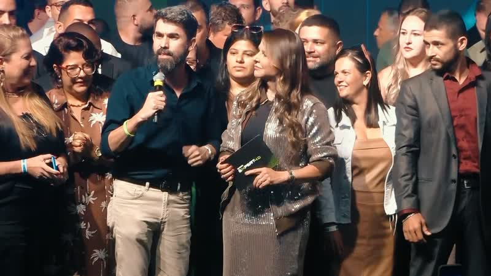
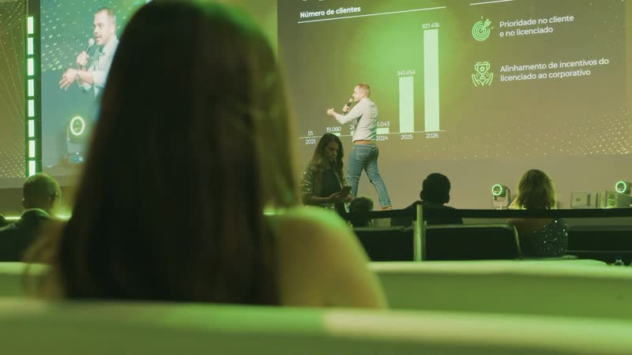
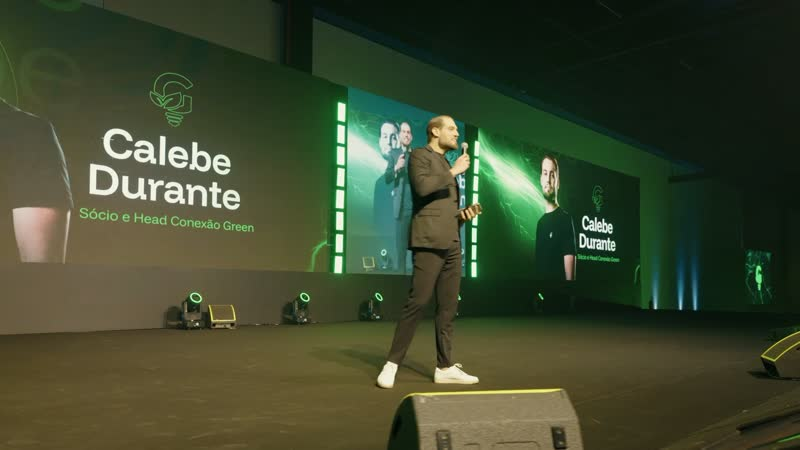

01Recife, 2024
A primeira caravana
Onde o tour nasceu — uma van, seis palestrantes e um litoral de histórias que se transformou em um movimento.
Role para ver a seção
Cada parada virou história.
3 edições desde 2024
01Recife, 2024
Onde o tour nasceu — uma van, seis palestrantes e um litoral de histórias que se transformou em um movimento.
02Curitiba, 2024
A edição mão na massa: casos reais no telão, turmas menores e o método que hoje conduz o tour inteiro pelo país.
03São Paulo, 2025
Doze mil pessoas sob o mesmo teto — nosso maior palco, o público mais vibrante e um encerramento que bateu recordes.
Energia. Conexão. Renda que fica.
E a próxima história
pode ser a sua.
3 edições desde 2024

Onde o tour nasceu — uma van, seis palestrantes e um litoral de histórias que se transformou em um movimento.
Março de 2024
A edição mão na massa: casos reais no telão, turmas menores e o método que hoje conduz o tour inteiro pelo país.
Setembro de 2024
Doze mil pessoas sob o mesmo teto — nosso maior palco, o público mais vibrante e um encerramento que bateu recordes.
Agosto de 2025E a próxima história pode ser a sua.
Garantir meu lugarFim da seção (opção C)